Press Invite friends and doodleduo writes six words on a note. Tear it off and read it to a friend, or let their phone camera scan the code.
Your friend reads six new words back to you. If they match, nobody is in between.
1. You get six words and a QR code.
2. Your friend types them, or scans the code.
3. They read six words back and you are drawing together.
page 2
Talk while you draw.
A chat with replies and reactions, a voice call with strong noise suppression, small camera bubbles that float next to each cursor, and screen sharing. All of it straight between you.
Bia
Caio
BiaWho is drawing the tent?
Bia: Who is drawing the tent?CaioMe, give me a minute
21
3 in the call
page 3
Draw at once. It all lines up.
Every person holds the whole board. Each change is a small message stamped with a logical clock, applied with the same rules everywhere, so two people moving the same note end up in the same place. Someone who joins late gets the full board, pictures and chat included.


page 4
Everything a slate needs.
Pressure aware penSmooth lines. Mouse and fingers use your speed.
Highlighter and eraserThe eraser lifts whole strokes and shapes.
Shapes, arrows, textRectangles, ellipses, lines and handwritten text.
Notes and picturesPaste or drop a picture: compressed, sent to all.
Select, move, resizeDuplicate, bring to front, nudge with the keys.
Undo that is yoursNever undoes what a friend just drew.
Endless, any screenTwo fingers pan and pinch on phones.
Boards you keepSaved in your browser. PNG, SVG or a board file.
Install itOpens offline. English and Portuguese.
page 5
No account. No server of ours.
Drawings, chat, voice and video travel over encrypted WebRTC connections, directly between the people on the board.
To find each other, devices meet on public MQTT brokers. They only see a random topic and data sealed with a key made from your six words.
The confirmation words come from the encryption keys of the connection itself. Someone in the middle would change them.
Boards and chat are stored in your browser and nowhere else.


page 6
Good questions
Is it free?
Yes, and open source under the MIT license. No ads, no tracking.
How many people can join?
Up to five on one board, you included. Anyone already on the board can invite the next person with new words.
What happens when everyone closes the board?
Each person keeps their copy in their browser. Next time, invite each other again and the copies merge back into one.
Why did a connection fail?
Some networks block direct connections. The app checks at start whether a public STUN server answers and explains what it finds. On strict networks you can add your own TURN server in the settings; none is built in.
How good is the noise suppression?
Strong mode runs the browser filters plus our own suppressor, which removes fans, hum and keyboard clicks while keeping your voice. You can test it on yourself in the settings.
Can I keep a copy of a board?
Export a PNG, an SVG or a board file. Opening a board file of a board you already have merges the two.

Grab a friend and a slate.
Open the app, press Invite friends, read six words out loud.